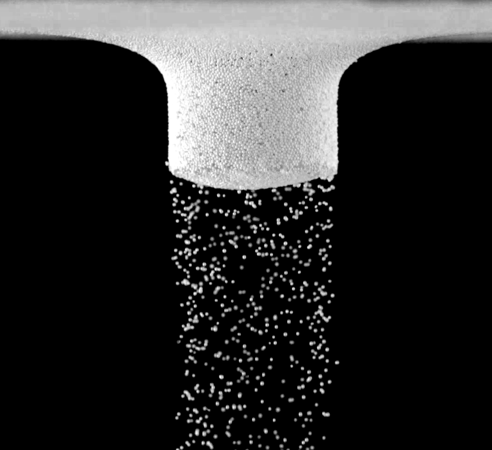
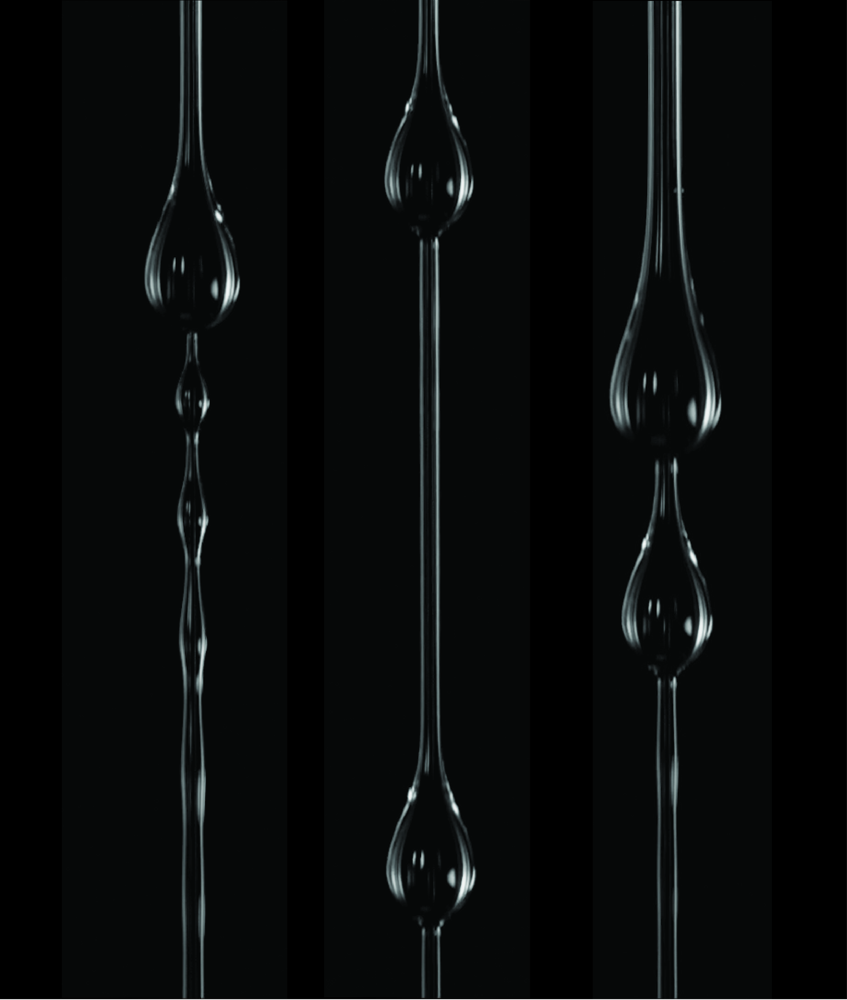
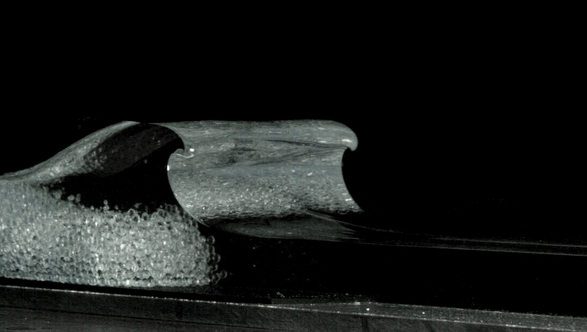

Images

A bouncing drop.

Particle ejection.

Bead-on-fiber patterns.

Chutes and ladders.

The breaking point.
Videos
Thin film flow between fibers: inertial sheets and liquid bridge patterns
2022 Gallery of Fluid Motion (Winning entry)
Select Press: PRF, FYFD, Clemson
Posters

Coat or Collapse? - 2023 Gallery of Fluid Motion (Winning entry)